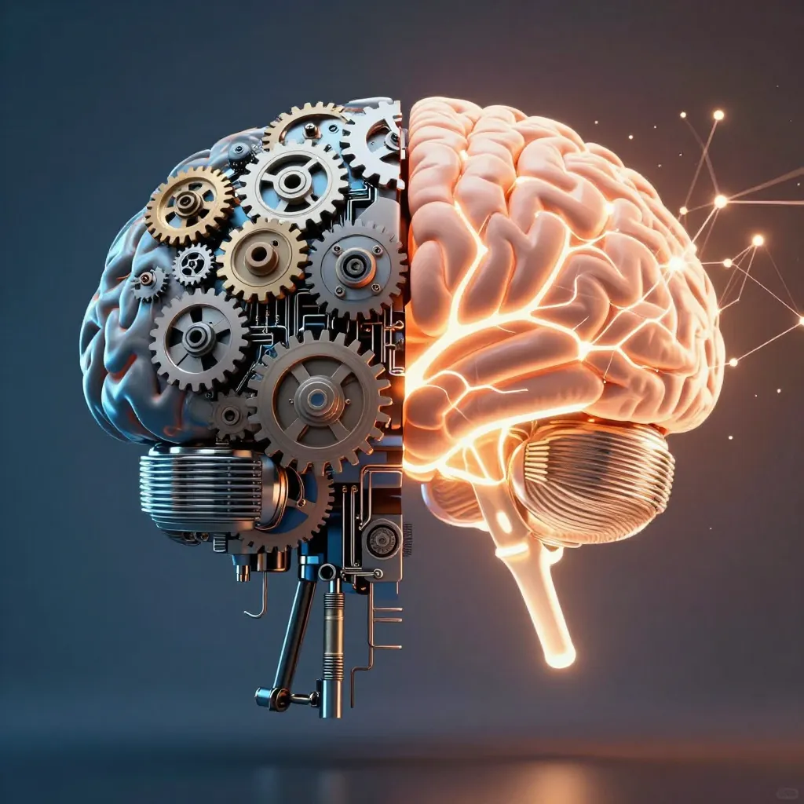

9 Ce que les machines ne sauront jamais
9.1 Le rêve du manuel parfait
Imaginons un projet fou : écrire un manuel — un seul livre, aussi épais que nécessaire — qui contiendrait toutes les règles permettant de reproduire ce que fait un esprit humain.
Résoudre un problème de mathématiques. Reconnaître un visage. Inventer une histoire. Apprendre une langue. Tomber amoureux d’une idée.
Si un tel manuel existait, on pourrait le donner à une machine. Elle suivrait les règles, une par une, et finirait par penser comme nous. L’intelligence humaine serait alors axiomatisable — réductible à un ensemble fini de principes.
Ce rêve a un nom : le programme mécaniste. Et Gödel nous dit pourquoi il est voué à l’échec.
9.2 Quatre raisons pour un échec
Pourquoi ne peut-on pas écrire ce manuel ?
La complexité infinie. Le cerveau humain compte cent mille milliards de connexions. Même si l’on décrivait chaque neurone, il y aurait toujours des configurations nouvelles — des états jamais prévus par le manuel.
La créativité. L’intelligence ne se contente pas d’appliquer des règles connues. Elle en invente de nouvelles. Newton n’a pas appliqué le calcul différentiel — il l’a créé. Un manuel figé ne peut contenir des règles qui n’existent pas encore.
L’auto-référence. Nous pouvons parler de nous-mêmes, remettre en cause nos propres concepts, sortir du cadre. C’est précisément ce que fait Gödel : il construit une phrase qui parle du système lui-même.
Les limites logiques. Et c’est ici que le théorème d’incomplétude entre en scène. Si notre manuel est suffisamment puissant pour contenir l’arithmétique de base — et il le faudrait, pour reproduire ne serait-ce que la capacité de compter — alors il sera forcément incomplet. Il existera des vérités qu’il ne pourra pas démontrer.
9.3 Ce que Gödel nous dit des machines
Une machine — un ordinateur, une intelligence artificielle, un programme — fonctionne exactement comme un système formel.
Elle possède un code source fini : ses “axiomes”. Elle applique des règles de calcul déterministes : ses “déductions”. Elle produit des résultats : ses “théorèmes”.
Gödel nous dit ceci :
Même la machine la plus puissante, si elle est capable de simuler l’arithmétique, ne pourra jamais résoudre tous les problèmes de ce domaine.
Et plus troublant encore :
Elle ne pourra jamais prouver qu’elle ne fera jamais d’erreur — tant qu’elle est assez puissante pour faire de l’arithmétique.
Ce n’est pas une question de puissance de calcul. Ce n’est pas une question de mémoire ou de vitesse. C’est une limite structurelle, aussi infranchissable que les murs de la cathédrale.
9.4 L’humain et la machine
Voici le contraste que Gödel révèle [L1] :
| La machine | L’esprit humain |
|---|---|
| Suit un ensemble fini de règles | Peut créer de nouvelles règles |
| Ne peut pas sortir de son cadre | Peut se regarder de l’extérieur |
| Est soumise à l’incomplétude | Reconnaît les vérités que le système ne peut prouver |
| Ne peut garantir sa propre cohérence | Peut douter de lui-même — et c’est une force |
Souvenez-vous de la phrase G : “Cette formule n’est pas démontrable.”
Le système ne peut pas la prouver. Mais nous, en regardant de l’extérieur, nous voyons qu’elle est vraie. Nous avons ce que le système n’a pas : un regard extérieur, une capacité de transcendance.

9.5 De nouveaux principes attendent
Gödel n’a pas seulement montré des limites. Il a ouvert une porte.
Si l’arithmétique de base laisse des vérités orphelines, alors il faut inventer de nouvelles méthodes pour les atteindre. Et c’est exactement ce que les mathématiciens ont fait depuis 1931 :
- La logique intuitionniste, qui refuse le tiers exclu
- La logique modale, qui parle de ce qui est possible et nécessaire
- La théorie des types homotopiques, qui repense les fondements
- Les logiques probabilistes, qui embrassent l’incertitude
Chaque nouvelle logique est une nouvelle carte de l’océan. Elle révèle des îles que les anciennes cartes ne montraient pas.
Et l’esprit humain est le navigateur qui trace ces cartes.
9.6 La métaphore de l’océan
Imaginons que la connaissance soit un océan.
Les axiomes sont les cartes que l’on trace : elles montrent les côtes que nous connaissons, les routes que nous avons explorées.
Le théorème de Gödel nous dit qu’il y aura toujours des îles invisibles sur ces cartes — des terres que nos instruments actuels ne peuvent pas détecter, même si l’on dessine avec le plus grand soin.
L’intelligence humaine est le navigateur qui, en plus de suivre la carte, sait découvrir de nouvelles îles et dessiner de nouvelles cartes. Il peut lever les yeux du parchemin et regarder l’horizon.
Les machines sont les bateaux qui suivent strictement la carte. Ils voguent vite — plus vite que n’importe quel navigateur. Mais ils ne peuvent jamais explorer les terres qui n’y figurent pas.
La question ultime : qu’est-ce qui distingue le navigateur du bateau ?

9.7 Ce que cela signifie pour nous
| Domaine | Implication |
|---|---|
| Intelligence artificielle | Les modèles actuels excellent sur des tâches bien définies, mais ne pourront jamais reproduire la capacité humaine à créer de nouveaux concepts |
| Philosophie de l’esprit | L’idée que l’esprit serait “juste un ordinateur” devient difficile à soutenir |
| Mathématiques | La recherche continue — de nouvelles logiques restent à inventer |
| Éducation | Enseigner des règles ne suffit pas ; il faut cultiver la capacité à poser de nouvelles questions |
9.8 Ce que nous avons appris
| Concept | Ce qu’il faut retenir |
|---|---|
| L’impossibilité du manuel | On ne peut pas axiomatiser entièrement l’intelligence humaine |
| Les limites des machines | Toute machine suffisamment puissante est soumise à l’incomplétude |
| Le regard extérieur | L’humain peut voir ce que le système ne peut pas prouver |
| Les nouveaux principes | De nouvelles méthodes de démonstration attendent d’être inventées |
9.9 Le mot de la fin
Nous voici au terme du voyage.
De la crise de 1902 à la formule qui se regarde elle-même, des ondes de choc en informatique aux îles invisibles de l’océan de la connaissance — nous avons suivi le fil d’une idée vertigineuse.
Gödel n’a pas détruit les mathématiques. Il ne nous a pas condamnés à l’ignorance. Il a fait quelque chose de plus subtil : il a tracé les contours de ce que nous ne pouvons pas savoir depuis l’intérieur — et, ce faisant, il a révélé l’existence d’un dehors.
Car c’est peut-être là le message ultime. Dans un monde fasciné par les algorithmes et l’automatisation, Gödel nous rappelle qu’il y aura toujours un espace pour ce qui échappe aux règles. Un espace pour l’intuition qui précède la preuve. Pour la question qui n’a pas encore été posée. Pour le navigateur qui lève les yeux de la carte.
La cathédrale des mathématiques n’est pas achevée. Elle ne le sera jamais. Et c’est précisément ce qui la rend vivante.
Les vérités orphelines ne sont pas des échecs. Ce sont des invitations — à continuer de chercher, de créer, de tracer de nouvelles cartes sur l’océan sans fin de ce que nous ne savons pas encore.